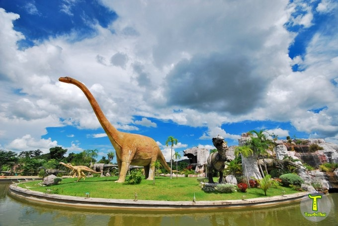
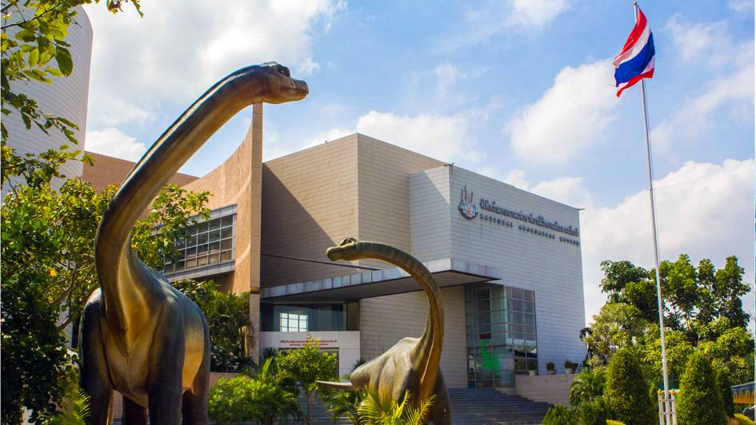

1.พิพิธภัณฑ์สิรินธร จ.กาฬสินธุ์
พิพิธภัณฑ์สิรินธร เป็นศูนย์วิจัยเกี่ยวกับไดโนเสาร์และ พิพิธภัณฑ์ไดโนเสาร์แห่งแรกของประเทศไทย ตั้งอยู่ที่ภูกุ้มข้าวซึ่งเป็นเขาโดดสูงประมาณ 300 เมตร ตำบลโนนบุรี อำเภอสหัสขันธ์ จังหวัดกาฬสินธุ์ เป็นพิพิธภัณฑ์ทางธรรมชาติวิทยา ที่มีการจัดแสดงซากกระดูกไดโนเสาร์และความหลากหลายของสิ่งมีชีวิตในมุมมองต่าง ๆ ทั้งเชิงวิชาการ การอนุรักษ์ รวมไปถึงความสัมพันธ์ต่าง ๆ จนได้รับขนานนามว่าเป็นแหล่งไดโนเสาร์ที่สมบูรณ์ที่สุดในภูมิภาคเอเชียอาคเนย์
คลิกดูแผนที่ →
2.อุทยานไดโนเสาร์ศรีเวียง จ.ขอนแก่น
อุทยานไดโนเสาร์ศรีเวียง อีกหนึ่งสถานที่ท่องเที่ยวที่มีชื่อเสียง ซึ่งตั้งอยู่ในเขตพื้นที่ของตำบลเมืองเก่าพัฒนา อำเภอเวียงเก่า จังหวัดขอนแก่น เป็นสวนสาธารณะริมเส้นทางระหว่างทางไปอุทยานแห่งชาติภูเวียง มีพื้นที่ 25 ไร่ มีฉากหลังเป็นเทือกเขาภูเวียง ในบริเวณจัดทำเป็นสวนพักผ่อน สวนสุขภาพ มีโขดหิน น้ำตก บ่อน้ำ สวนหย่อม สนามนั่งเล่น มีหุ่นไดโนเสาร์จำลองเรียงรายทั่วบริเวณนับร้อยตัว บางตัวสามารถร้องได้ เคลื่อนไหวได้คล้ายของจริงโดยต้องหยอดเงินที่ตู้
คลิกดูแผนที่ →
3.พิพิธภัณฑสถานแห่งชาติ ธรณีวิทยาเฉลิมพระเกียรติ จ.ปทุมธานี
พิพิธภัณฑสถานแห่งชาติธรณีวิทยาเฉลิมพระเกียรติเป็นสถานที่จัดแสดงและจัดเก็บตัวอย่างอ้างอิงของประเทศ (เฉพาะชิ้นที่สำคัญ) และจัดแสดงนิทรรศการเผยแพร่ความรู้ด้านธรณีวิทยา รวมทั้งเหมืองแร่ น้ำบาดาล ปิโตรเลียม ประวัติความเป็นมาของโลก ซึ่งเป็นความรู้ด้านสาขาต่างๆของวิชาธรณีวิทยาทั้งหมดเป็นศูนย์ประสานงานเชื่อมโยงความรู้กับศูนย์วิจัยหรือพิพิธภัณฑ์อื่นภายใต้ความดูแลของกรมทรัพยากรธรณี
คลิกดูแผนที่ →
4.Royal Tyrrell Museum Canada
พิพิธภัณฑ์บรรพชีวินวิทยารอยัลไทร์เรล เป็นพิพิธภัณฑ์และศูนย์วิจัยด้านบรรพชีวินวิทยา ตั้งอยู่ในเมืองดรัมเฮลเลอร์ รัฐแอลเบอร์ตา ประเทศแคนาดา ปัจจุบันพิพิธภัณฑ์มีคอลเลกชันส่วนบุคคลมากกว่า 160,000 ตัวอย่างฟอสซิลที่ได้รับการขึ้นทะเบียน ซึ่งรวมถึง โฮโลไทป์ (holotype) มากกว่า 350 ชิ้น ทำให้พิพิธภัณฑ์แห่งนี้มีคอลเลกชันฟอสซิลที่ใหญ่ที่สุดในแคนาดา ภายในนิทรรศการต่าง ๆ ของพิพิธภัณฑ์มีการจัดแสดงฟอสซิลจากคอลเลกชันประมาณ 800 ชิ้น
คลิกดูแผนที่ →5.Dinosaur National Monument USA
อนุสรณ์สถานแห่งชาติของสหรัฐอเมริกา ตั้งอยู่บริเวณเชิงเขาด้านตะวันออกเฉียงใต้ของเทือกเขายูอินตา (Uinta Mountains) บริเวณพรมแดนระหว่างรัฐโคโลราโดและรัฐยูทาห์ ตรงจุดบรรจบของแม่น้ำกรีน (Green River) และแม่น้ำแยมปา (Yampa River) เดิมพื้นที่แห่งนี้ได้รับการประกาศให้เป็นพื้นที่อนุรักษ์ในปี ค.ศ. 1915 เพื่อปกป้อง Dinosaur Quarry อันมีชื่อเสียง ต่อมาในปี ค.ศ. 1938 ได้มีการขยายพื้นที่อนุสรณ์สถานอย่างมาก เพื่อครอบคลุมทรัพยากรทางธรรมชาติและประวัติศาสตร์อันหลากหลายของพื้นที่ ภูมิประเทศธรรมชาติอันกว้างใหญ่ ลักษณะภูมิประเทศ ธรณีวิทยา บรรพชีวินวิทยา และประวัติศาสตร์ของพื้นที่ ทำให้ที่นี่เป็นแหล่งทรัพยากรที่มีความสำคัญทั้งด้าน การวิจัยทางวิทยาศาสตร์และการพักผ่อนหย่อนใจ
คลิกดูแผนที่ →